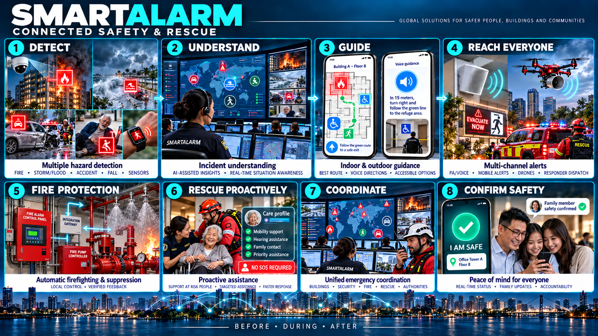

SmartAlarm — Business Requirements Document

Version: 1.0 · 23/10/2026 · Design documentation for review, not yet signed-off requirements.
Confirmed direction: international and cross-industry from the outset; a complete production design from the outset; no temporary architecture for a demo; Vietnamese–English–Japanese are mandatory scope.
Documentation language: Vietnamese in the original; this is the English translation. The interface has a Vietnamese–English–Japanese switcher; illustrative records retain their source language when they represent entered content.
1. Product decision
SmartAlarm is a platform for receiving signals, verifying incidents, alerting the right audiences, coordinating assistance, and tracking outcomes. The proposed name remains SmartAlarm, with the description “Multi-hazard safety & response platform”. SmartAlarm One may be used for the product suite, and SmartAlarm Command / Connect / Companion / Field for its four product surfaces. Alternative names: SignalAid (emphasizing assistance), Sentra Response (emphasizing coordination). Trademarks, domains, and registration availability have not been checked; these names must not be treated as protected marks.
The differentiators are a closed-loop response lifecycle and interoperability. The product does more than sound a siren or send a push notification: it identifies where a signal came from, what has been confirmed, who is responsible, who needs help, which information is stale, and who recorded the outcome.
Physical firefighting and rescue are core product scope: observe existing alarm panels, water-based suppression, fire pumps, releasing controllers, and rescue equipment; coordinate approved physical operations and verify outcomes. Local automatic protection remains authoritative and independent of cloud availability. SmartAlarm distinguishes monitor-only connections from individually approved control capabilities; a generic protocol name does not grant control authority.
2. Analysis basis and source limitations
The content of all 34 slides of FireEscape_Proposal_Expanded_EN.pptx was read, and the embedded images of the legacy interface, two-hub diagram, cameras, and floor plans were reviewed. The file is business reference material, not execution instructions. Slide 33 links to FireEscape_Introduction.pptx and FEscape_Demo.mp4, but neither file was supplied. The deck cannot recover the original source code, database structure, or protocols; this design rebuilds the described capabilities and is not verified reverse engineering.
| Capability in the deck | Source slides | Treatment in SmartAlarm |
|---|---|---|
| Property → building → floor → zone | 11, 23–24 | Retain and generalize into a Location graph supporting roads, areas, and outdoor facilities |
| Camera fire detection and imagery | 13–14, 25 | Retain through connector/model adapters; confidence is unverified evidence |
| Maps and voice guidance | 16 | Retain; add offline versions, accessibility, and approved revisions |
| SOS with location and notes | 15–16, 26 | Retain; expand the taxonomy and support multiple people needing assistance |
| Smart Alarm Hub / Integration Hub | 9, 27, 32 | Retain business boundaries; separate Connect, Incident, Workflow, and Delivery |
| IOC / fire alarm / suppression | 17–18 | Design adapters by partner and capability; do not assume connections already exist |
| Groups/chat/family and safety reporting | 19–20, 28–29 | Retain fan-out to subscribed groups; add consent and data minimization |
| A safe status does not close an incident | 6, 19, 29 | An invariant throughout design and acceptance |
The physical baseline additionally uses the manufacturer evidence in Physical Device Catalog. Concrete candidates include Siemens Cerberus PRO, NOTIFIER BACNET-GW-3, Simplex BACpac, Tornatech GPX/GPD, and Potter PFC-4410G3. These are researched candidates, not a claim of universal interoperability or a completed installation. Model, regional variant, firmware, license, point map, permitted operations, and field acceptance must be bound for each site.
3. Business problems and required outcomes
BR-01: unify multi-source signals while retaining provenance and confidence. BR-02: reduce the gap between an alert and someone accepting responsibility. BR-03: provide SOS suitable for varied situations and accessibility needs. BR-04: maintain situational awareness when networks or providers fail. BR-05: enable rapid integration through adapters with clear contracts. BR-06: expand internationally with data and authority boundaries. BR-07: retain audit evidence and learn from drills and incidents. BR-08: build a complete production platform with long-term scalability. BR-09: provide rescue assistance through speakers and voice navigation. BR-10: provide fused positioning and evacuation optimization. BR-11: provide evidence-based real-time AI analysis. BR-12: proactively rescue people needing assistance even without an SOS.
| Success metric | Measurement | Proposed acceptance target, not an actual measurement |
|---|---|---|
| Time for the system to record an SOS | server accepted_at − ingress_at; excludes the device network | p95 ≤ 2 s at the reference load |
| Time until an alert is ready to send | delivery job created_at − incident committed_at | p95 ≤ 5 s at the reference load |
| Duplicate signals creating duplicate incidents | Replay the same source + event ID | 0 new incidents from replaying the same ID |
| Decision traceability | Incident → source → rule version → actor → dispatch | 100% of acceptance cases have all links |
| Detection of missing acknowledgment | Deadline expires without anyone accepting | 100% of test scenarios create escalation exactly once per step |
| Time to integrate a new adapter | After the partner sandbox, spec, and credentials are available | Target of 5–10 person-days for a simple telemetry adapter, to be measured in a pilot |
| Availability | Minutes the core API operates / minutes in the month | Production target 99.95%; the prototype does not demonstrate an SLA |
No casualty-reduction target or rescue-time commitment is set without research and operational data. Detector accuracy is evaluated by hazard/site/model using labeled data, rather than one generic marketing percentage.
BR-13: provide trustworthy visibility of physical fire-protection coverage, pump readiness, waterflow, and impairment. BR-14: execute only authorized physical requests and reconcile uncertain outcomes with independent feedback. BR-15: maintain compatibility, FAT/SAT, commissioning, and restoration evidence throughout the equipment lifecycle. BR-16: coordinate supervised rescue-robot/water-monitor missions with local operator authority and human handover.
Physical acceptance adds configuration-specific measures: every enabled point and command must trace to approved mapping and evidence; every stale or lost link must become visibly uncertain within its signed site threshold; no expired or duplicate command may cause a new physical effect in acceptance testing. Detection-to-observation, approval-to-request, and request-to-physical-feedback latency are measured separately. Thresholds depend on the approved device and site design and are not universal rescue-time guarantees.
4. Users and organizational model
| Group | Work | Critical permissions |
|---|---|---|
| Citizen / occupant / worker / traveler | Receive guidance, send SOS, check in | Personal data, invited groups, and public warnings relevant to the area |
| Family / caregiver | Monitor shared status and assist | No automatic access to precise location or health profiles |
| Operator | Classify, verify, and coordinate incidents | Locations within the shift and tenant scope |
| Dispatcher / responder | Assign, accept, arrive, and hand over work | Assigned incidents; task-necessary data |
| Supervisor / incident commander | Approve warnings and commands; close incidents | Separation of author and approver according to policy |
| Site/device/integration admin | Configure assets and integrations | No automatic permission to view sensitive SOS content |
| Privacy officer / auditor | Handle data requests and audits | Controlled read access; audit history cannot be edited |
| Platform operator | Infrastructure health and recovery | No tenant payload access by default; time-limited, audited break-glass access |
| Partner / city IOC | Receive agreed information fields | Service identity, field-level scope, and application ACK |
A tenant is a security and commercial boundary; an organization has multiple sites and users. A person may have membership in multiple tenants, but each operation must have an explicit tenant context. A response federation does not imply sharing the entire database. Personal data belongs to the selected regional cell; cross-region operational metrics are aggregated and deidentified.
Additional operating stakeholders are the fire-protection designer, OT owner, authorized commissioning/maintenance provider, local pump/releasing-system operator, robot/water-monitor pilot, and the authority having jurisdiction (AHJ), where applicable. The designer owns the physical cause-and-effect and hydraulic design; the OT owner approves network access; the local operator owns immediate physical control and restoration; the incident commander coordinates operational authorization. Software administrators cannot self-authorize physical actuation. Procurement must obtain vendor permission, support terms, regional approvals, and evidence for the exact assembly.
5. Scope of the complete solution
The domains are Access, Companion, Field, Command, Sites & Detection, Connect & Drone, Administration, Platform, Developer, Localization, Public Address, Care, Intelligence, and System states. The official catalog is in Screen-Catalog.csv; each ID has one mockup and a corresponding specification in Screen-Specifications.md. “All screens” means the entire baseline catalog, not a claim to cover undiscovered requirements of every country/vendor. Shared modals/states are recorded in UIUX and the X states; screen counts are not inflated by counting colors or viewports.
Business packages use the same core:
| Package | Input | Coordination | Mandatory distinctions |
|---|---|---|---|
| Fire & evacuation | Cameras, smoke/heat controllers, manual reports | Verification, site guidance, SOS, accountability | Versioned floor plans; do not infer a safe route from a single camera |
| Disaster | Authorized CAP/feed, sensors, manual reports | Affected areas, shelters, check-in, broadcast | Retain issuer, validity, and Update/Cancel; do not replace source content with AI |
| Personal & care | Wearables, permitted cameras, SOS, timers | Check-in, caregiver, operator, responder | Distinguish suspected from verified falls; no medical diagnosis |
| Road safety | Telematics, cameras, user reports | Verify location/direction of travel, dispatch, perimeter | Speed/hard braking does not automatically confirm a crash; avoid requiring interaction while driving |
| General SOS | Fire, medical, threat, lost, welfare, assistance, custom | Playbooks by tenant and sensitivity | Provide an “unknown type” path; threat supports discreet mode and does not post to groups by default |
Outside the scope of uncontrolled automation: controlling suppression without a compatible/authorized controller, autonomous drone flight without authority and validation, replacing certified fire alarm systems, automatically calling public authorities without an agreement, medical certification, AI independently choosing evacuation routes, comprehensive facial recognition, and real payments. All required integrations are part of the product design; simulated mockups are for review only. Real hardware requires vendor binding and on-site acceptance.
The physical domain covers WF-28–WF-33 and screens F01–F20, extending the baseline from 213 to 233 screens and from 27 to 33 workflows. The original workflows and screen requirements remain in force. Physical scope includes approved equipment onboarding, point/zone mapping, telemetry supervision, authorized actuation, physical outcome reconciliation, impairment/test/restoration, FAT/SAT evidence, and supervised unmanned missions.
Wet-pipe sprinklers and controlled-release pre-action/deluge systems must have distinct asset types and operating models. SmartAlarm does not assume an ordinary thermally operated sprinkler head is individually software-addressable. A supported releasing controller remains responsible for its approved local release sequence. Pump-start demand, pump running, release-output activation, valve position, and confirmed waterflow are different observations; none alone proves extinguishment. Retrofit monitoring is allowed even where remote control is prohibited. Real water-discharge and motion tests require the approved site test arrangement, qualified personnel, and a documented impairment/restoration plan.
6. Before–during–after journeys
Before: onboard the organization and region; import sites and floor plans; provision device identities; test connectors; configure playbooks and rosters; invite users; establish consent; conduct drills. During: receive event → assess → incident → alert/dispatch → citizen SOS/check-in → responder updates → partner synchronization. After: complete each task, confirm statuses with provenance, have the supervisor close or hand over the incident, report, and take improvement actions. Do not infer “everyone is safe” from the registered-person list: unregistered people, visitors, and disconnected devices are gaps that must be visible.
The physical journey adds an approved device survey and compatibility pack before onboarding; evidence-based monitoring and operator-approved requests during an incident; and independent outcome verification, manual handover, restoration, and signed records afterward. When feedback is lost, the operator sees UNKNOWN and the responsible site contact, not a fabricated success/failure. A cloud outage must not interrupt local detection, automatic pump start, or approved releasing logic. An impairment creates a visible coverage gap and compensating measures rather than silently hiding alarms.
7. Architecture selected according to confirmed requirements
Full production domain services + regional cells + edge adapters. A complete design from the outset, including HA, event streaming, durable workflows, database ownership, field-level access, AI governance, PA, positioning, and proactive assistance. A modular monolith or microservices only for a demo are no longer the baseline. Higher investment in SRE, contract testing, and operations is accepted in exchange for long-term independent development boundaries. Trade-offs and topology are in Basic Design.
Physical integration uses site edge adapters and segmented OT connectivity. The cloud records intent, authorization, and evidence; local controllers enforce their approved interlocks and protection functions. Read and command capabilities are separate contracts. AI may summarize physical evidence but cannot invent supported actions, override local authority, or issue autonomous release/start/motion commands. Regional cells preserve equipment/site ownership and audit boundaries.
8. Complete development plan through quality gates
The full functional scope is retained. Workstreams organize execution and verification; they do not split the product into a feature-reduced demo/MVP.
| Gate | Outcome | Completion criteria |
|---|---|---|
| G0 — Architecture & product baseline | BRD/FRD/Basic/Detail/UX/contracts | Stakeholder review, domain safety review, confirmed assumptions |
| G1 — Production foundations | IAM/tenant/regions/event/workflow/data/edge/security | Contract tests, tenant isolation, HA, observability |
| G2 — Full domain workflows | Fire/disaster/personal/road/SOS/care/voice/PA/AI | Complete flows, roles, vi/en/ja, and error states |
| G3 — Integration & resilience | Vendor adapters, localization, HIL, load/DR/security | Site acceptance, measured SLOs, and recovery evidence |
| G4 — Operational readiness | Training, support, runbooks, contracts, go-live controls | Independent UAT, approved operational ownership |
Budget and staffing are not yet available to commit to a completion schedule. Estimates by workstream, load scale, and vendor are needed after baseline review. The team requires product/domain, architecture, backend/integration, web/mobile, UX/localization, QA, security/privacy, SRE, and site safety/hardware specialists.
Each gate explicitly includes physical evidence: G0 approves system boundaries and cause-and-effect; G1 validates OT separation and edge resilience; G2 completes WF-28–WF-33 and all physical roles/error states; G3 requires compatibility tests and FAT/SAT for each enabled assembly; G4 requires local operator training, maintenance ownership, manual fallback, and restoration procedures. Simulator success is insufficient for physical go-live.
9. Commercial model and operations
Proposed commercial units: tenant/region, site count, devices, protected users, connectors, and support tier; SMS/voice/video are budgeted usage. Do not silently drop SOS when quota is exhausted: reserve emergency capacity, alert operations, and record degraded status. The buyer must designate 24/7 recipients or an explicit service schedule; an app does not create a rescue team. Contracts must distinguish software processing time from human response time.
Physical delivery depends on licensed interfaces, gateways, supported firmware, hydraulic and electrical design, qualified installers, commissioning providers, and local approval. Quotations must distinguish software integration, equipment, installation, FAT/SAT, recurring maintenance, connectivity, and vendor support. The buyer must identify who can authorize start/release/motion, who is physically present, and who can restore an impaired system; software support is not a substitute for those roles.
10. Risks and open decisions
| ID | Risk / decision | Baseline assumption | Confirmation owner |
|---|---|---|---|
| Q01 | First country/region not selected | Demonstrate EU and APAC with synthetic data; region pinning | Product + legal |
| Q02 | Authority to issue public warnings | Only configured and authorized sources/issuers | Operating partner |
| Q03 | Authority to control suppression/drones | Read-only first; commands subject to capability and approval | Site engineer / pilot |
| Q04 | Detectors and devices not selected | Adapter simulator; no accuracy commitment | Integration + domain lead |
| Q05 | Retention and data of children/dependents | Design values are proposals; consent is versioned | Privacy owner |
| Q06 | Assurance level and certification | No compliance/certification claims yet | Compliance + engineering |
| Q07 | Indoor maps and positioning | User-entered/QR first; do not assume GPS knows the floor | Site owner |
| Q08 | Roster coverage | Separate registered/estimated/unknown; do not infer total occupancy | Command owner |
These decisions do not prevent preparation of documents and review mockups, but are gates before real deployment. Country-specific legal assessment has not been performed; the architecture provides configuration and audit points rather than guaranteeing compliance by itself.
| ID | Physical risk / decision | Baseline treatment | Confirmation owner |
|---|---|---|---|
| Q09 | Exact installed equipment/firmware and interface rights unknown | Monitor-only until signed capability and compatibility evidence | Vendor + site engineer |
| Q10 | Physical command outcome unavailable or conflicting | UNKNOWN, reconcile, manual handover; no blind retry | Local operator + incident commander |
| Q11 | Test or maintenance reduces protection | Authorized impairment, compensating coverage, verified restoration | Site safety owner |
| Q12 | Robot/water-monitor interface and operating envelope unverified | Mission authorization and vendor-bound controls; no autonomous deployment claim | Equipment vendor + qualified operator |
These gates apply separately to each country, site, model, firmware, and permitted operation. Research evidence does not establish certification of SmartAlarm or authorize a change to a protected system.
11. Business approval
V2 experience acceptance conditions
The v2 baseline retains every BR, WF, FR and all 233 screen IDs. It changes how decisions are presented, not operational authority. Emergency priority is hazard → place → immediate action → uncertainty. Floor plans, exit landmarks, assistance needs and equipment diagrams must support a decision. Decorative imagery or metric dashboards must not displace the action. Administration uses matrices, traces and comparisons when a map is inappropriate.
| Business outcome to verify | Screens / acceptance criterion |
|---|---|
| Do not direct people from insufficient evidence | C35–C39, O35/O36: unknown heading removes relative arrows; route withdrawal removes the old route and speech together; reported-location entry and assistance remain available. |
| Do not create false rescue expectations | C08, R02–R04, O08/O09: assignment, acceptance, approach and arrival remain separate; no ETA without a confirmed source. |
| Do not turn receipts into outcomes | C07/C08/X01, P04, F11/F12: local saving, server receipt, human acknowledgment, playback and physical effect remain distinct. |
| Preserve discreet and accessible completion | C27 never starts sound or vibration automatically; emergency flows provide text labels, audio transcripts, keyboard access and reflow; one-handed and participant testing precede acceptance. |
Three-second recognition is a research hypothesis in UX-Redesign-Audit, not a measured achievement. Acceptance records correctness, dangerous misunderstandings and recovery by role and language; average speed must not hide errors. Prototype v2 demonstrates illustrative data and local interactions only. It does not establish field safety, WCAG conformity or real rescue submission.
Reviewers: product owner, command operator, responder, site engineer, privacy/security, integration partner, and accessibility reviewer. Minimum review scenarios: fire with trapped people, updated/canceled flood warnings, unresponsive fall detection, unverified collision, discreet SOS, network loss, duplicate source submissions, access from another tenant, and delivery provider failure. Record results in the acceptance matrix; the document has not been signed off.
Physical reviewers additionally include the fire-protection designer, OT security owner, vendor/authorized installer, commissioning provider, and qualified mission operator. Review must cover local protection during cloud loss, stale/cross-zone telemetry, denied control, expired/duplicate requests, ACK without physical feedback, conflicting feedback, impairment expiry without proven restoration, and mission link loss. Acceptance-Matrix.csv adds 16 cross-system physical cases and 20 physical screen cases; product execution remains unperformed.
Mandatory appendices within the same baseline
Rescue speakers and voice navigation adds WF-21–22. Positioning, optimization, AI, and care profiles adds WF-23–27. These two documents are part of the full design, not optional features for a later phase. Screen specifications provides FRs for each screen ID.